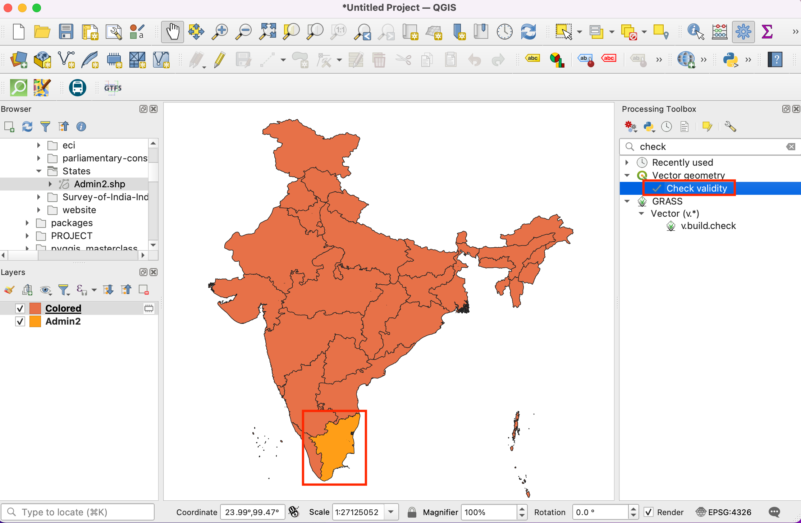
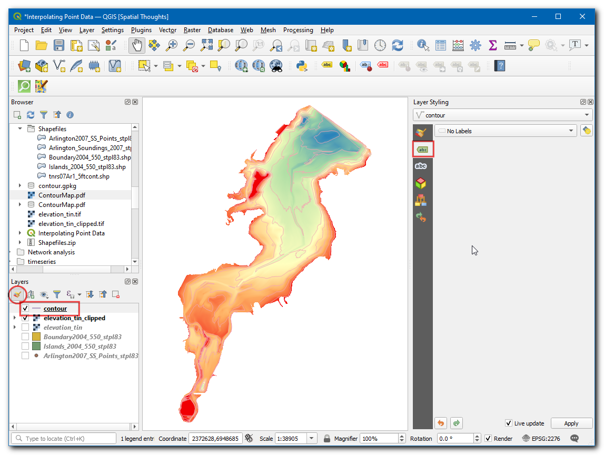
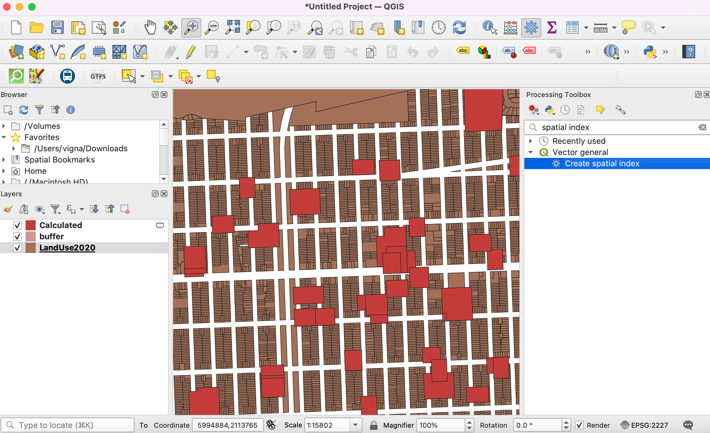
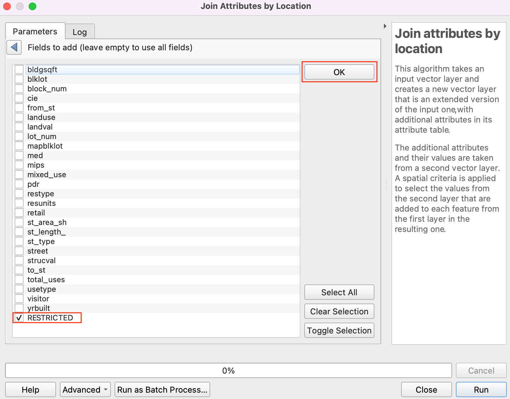
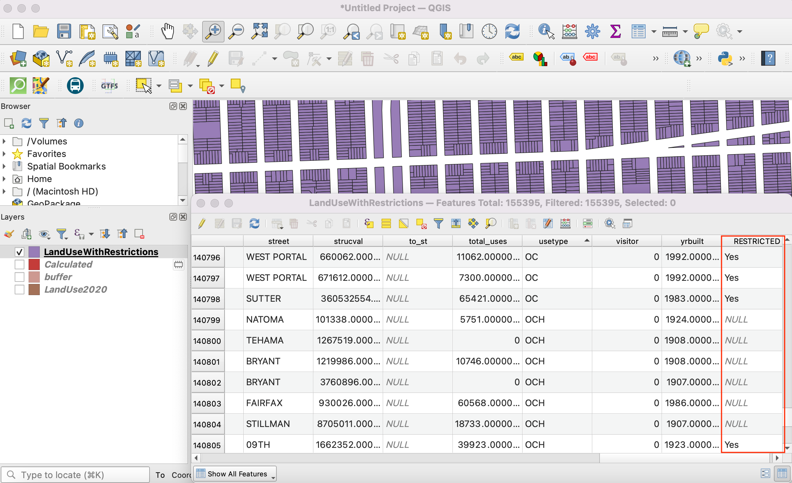
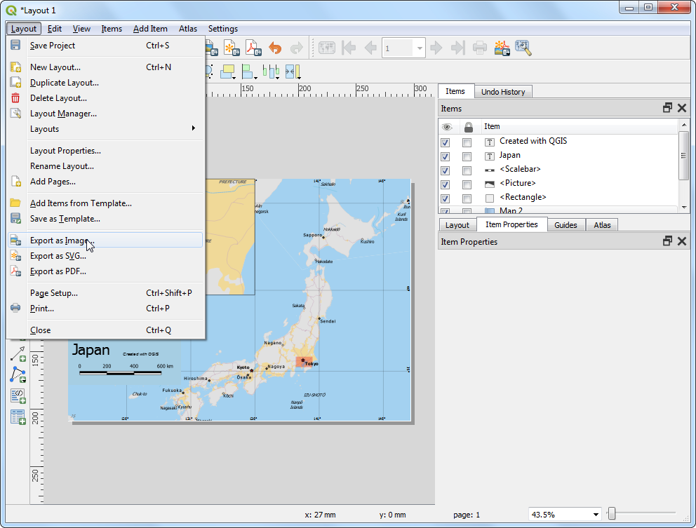

製作地圖 (QGIS3)¶
在你需要製作一張可供列印或出版的地圖時，QGIS 提供了一組稱為 Print Layout 的強大工具，它可以方便地把所有的圖層打包起來產生完整的地圖。
內容說明¶
本教學示範如何製作一張包含基本製圖元素的日本地圖，像是網格線、方位標示、比例尺、圖例與標籤、插頁小圖等等。
你還會學到這些¶
如何查看和更改 QGIS 專案的變數
如何使用 QGIS 表達式
取得資料¶
這邊使用的是 Natural Earth dataset 中的 Natural Earth Quick Start Kit ，這些資料包含相當不錯的全球圖層，而且可以直接載入到 QGIS 當中。
Download the Natural Earth Quickstart Kit. If the download link doesn’t work, get it directly from Natural Earth Downloads page.
資料來源 [NATURALEARTH]
操作流程¶
下載然後解壓縮 Natural Earth Quick Start Kit 的資料。打開 QGIS，然後在 瀏覽器 的面板中找到
Natural Earth quick start資料夾。展開此資料夾，就可以找到一個叫Natural_Earth_quick_start_for_QGIS_v3的專案檔。此專案檔含有 QGIS 相容格式的圖層資料。點兩下以開啟此專案。

備註
If you get a pop-up dialog named Handle Unavailable Layers, click the Auto-Find button followed by Apply Changes to fix the error.
If your map is in your preferred language, you can proceed to Step 4. If not, you can change the language of the labels. This project uses variables to set the language. We can change the variables by going to .

備註
專案變數可以用來儲存每個專案特有的一些設定，在你要撰寫 QGIS 表達式的時候也可以使用。Natural_Earth_quick_start_for_QGIS_v3 專案本身已經包含了不少預先定義的變數，所以可以使用它們來設定本專案的樣式。
Switch to the Variables tab in the Project Properties dialog. Locate the
project_languagevariable and click on the Value column to edit it. Change the language toname_enand click OK.

回到 QGIS 主視窗，按下在 地圖瀏覽工具欄 中的 重新整理 按鈕，就可以看到現在英文標籤已經套用在地圖上了。

Use the pan and zoom controls in the Map Navigation Toolbar and zoom to Japan.

你可以把一些我們在這裡用不到的地圖圖層給關起來。展開
z5 - 1:18m資料結然後取消勾選ne_10m_geography_marine_polys和ne_10m_admin_0_disputed_areas圖層旁邊的方格。在我們真的製作適合列印的地圖前，我們還得挑選一個適當的地圖投影。本專案的預設 CRS 是EPSG:3857 Pseudo-Mercator，在線上地圖中非常流行，而且也很適合我們的目的，所以我們就把沿用這個預設的投影模式。現在前往 。

備註
在日本地區，其實還有一個投影法可以使用，稱為 Japan Plane Rectangular CS (日本平面矩形座標系統)。這個投影法可以最小化投影造成的變形。它目前把全日本分成 18 個子區，如果你考慮把地圖範圍縮到更小的話，使用這個 CRS 會更好一點。
會有一個視窗跳出來要求你輸入設計標題，這邊可以先空著，點 確定 即可。

備註
如果標題是空白的話，程式會自動產生一個像是 Layout 1 的預設標題。
在 Print Layout 視窗中，按下 全圖顯示 鈕以顯示整張地圖。

現在我們要把在 QGIS 畫布中的東西放進來，請選擇 。

在 加入地圖 模式啟動之後，必須要在地圖版面上拖曳一塊你想插入地圖的區域。

你會看到這個區域馬上就填上了 QGIS 畫布中的東西。不過它未必會跟我們所要的製圖區域完全重合，這個時候可以使用 ，和 然後直接把在這個區域裡的東西拖曳到你所想要的範圍。

地圖的比例尺也可以稍做調整，在右側的 項目屬性 分頁中的 比例 欄位輸入 ``10000000``看看。

接下來我們會插入一個東京區域的放大版地圖，不過在進行任何更動之前，要把已經弄好的底圖給鎖起來。請勾選 Lock layers 以及 Lock styles for layers，這兩個選項是用來確保接下來在 QGIS 畫布上的更動，不會連帶影響到設計視窗中已經弄好的部分。

Switch to the main QGIS window. Turn off the layer group
z5 - 1:18mand activate thez7 - 1: 4mgroup. This layer group has styling that is more appropriate for a zoomed-in view. Use the pan and zoom controls in the Map Navigation Toolbar and zoom around Tokyo.

接下來就可以弄插頁小圖了。切換到 Print Layout 視窗，然後選擇 。

在你想要插入東京區域地圖的地方拉一個長方形。現在我們有 2 個地圖物件在同一個設計稿上了，所以如果你要改動其中任意一個地圖，就要先確認正確的地圖物件有沒有被選取起來。

在 項目 分頁中，請選擇我們剛剛加入的
地圖 2物件，然後在 項目屬性 分頁中，往下捲動到 框線 的欄位，把那個框框勾起來，這樣我們就能自由調整小插圖的外框，使之與主要地圖區隔開以方便辨識。

這裡有個很方便的功能，可以幫你標示小插圖是位在主地圖的哪裡。首先在 項目 分頁中選擇
地圖 0，然後在 項目屬性 分頁中，往下捲動到 全覽圖 的欄位，點選 新增全覽圖 的按鈕。

在 圖框 選單中選擇
地圖 2`，就可以把 ``地圖 2的小圖範圍標示在地圖 1中。

現在插頁小圖也完成了，下一步就來加個格線到主地圖上。在 項目 分頁中選擇
地圖 1，然後在 項目屬性 分頁中，往下捲動到 格線 的欄位，點選 加入格線 的按鈕，然後再按下 Modify grid…。

在預設的情形中，格線會使用與選擇的地圖相同的投影法標示，不過使用「經緯度」標示的格線卻更常見，而且使用者也易於閱讀。所以這裡我們來為格線選擇一個不同的 CRS 試試看。請點選格線欄位中，CRS 右側的 變更… 按鈕。

選擇座標參考系統 的視窗會跳出，在 過濾條件 內輸入
4326，然後選擇WGS84 EPSG:4326當作格線的 CRS，按下確定。

在 區間 欄位中，把 X 和 Y 都設成
5度，然後再適當的調整偏移，就可以設定格線要在哪出現。

往下移到 框線 的區塊然後勾選 Draw coordinates。預設使用的格式是
經緯度但是卻是使用像數字格式一樣的顯示。我們可以修改設定讓數字後方添加度數的標誌。選擇自訂然後點選在旁邊的 表達式 按鈕。

輸入如下的表達式就可以建立含有數字和度數符號的字串。
concat(to_string(@grid_number), '° ')
現在格線就有了我們定義的表達式標籤。你可依照你喜歡的樣式，調整 上、下、左、右 的標籤設定。

現在我們要加上一個方形區塊來擺放其他的地圖元素，項是指北符號、比例尺和圖例。選擇 。

可以修改矩形的 樣式 以和地圖的背景顏色一致。

再來就是加個指北箭頭。QGIS 本身有內建一些不錯的現成圖片，其中當然也包括許多種類的指北箭頭，只要選擇 ，

Holding your left mouse button, draw a rectangle. On the right-hand panel, click on the Item Properties tab and select the SVG image section and scroll down to find arrows from the SVG Groups. Select the image of your liking.

再加個比例尺好了。選擇 。

在你想要比例尺出現的地方按一下，記得在 項目屬性 中確認這個比例尺顯示的是
Map 1的比例尺。各種你想要的設定都可以在這邊調整。在 線段 的欄位中，調整 固定寬度 至200單位然後依照你想要的方式調整黑白線段。

總算到了上標題的時間！選擇 ，

在地圖上拖曳標籤的範圍，接著展開 項目屬性 中的 標記 欄位，然後就可以輸入文字。接著利用相似的方法給資料和軟體加上提供者的文字。

當你把地圖調整到最佳狀態後，就可以輸出成圖片檔、PDF 或是 SVG 檔了。這裡我們試試看轉存成圖片檔：選擇 。

存成任一種你喜歡的格式即可。這裡放的是存成 PNG 的圖片。

If you want to give feedback or share your experience with this tutorial, please comment below. (requires GitHub account)